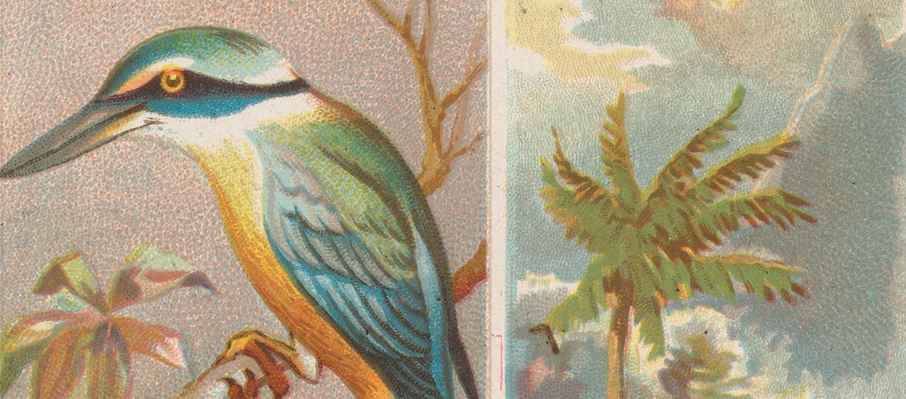

Fordlandia Malaise

Drones et colibris
Une greffe d’arbre, une forêt qui brûle. Une date et un lieu indiqués au milieu d’un diaporama de photos sépia faisant défiler tranquillement des paysages tropicaux, des paysages aux accents piquants de colonie. Des hommes, surtout des hommes ; il y a ceux aux chemises blanches — les ingénieurs de la compagnie Ford — et les autres, aux visages noirs qui s’abîment sous le soleil — les locaux·ale·s, les amérindien·ne·s. Il y a des maisons carrées et bien alignées le long du chemin de terre, des chantiers, des hectares brûlés, et des petits arbres qui poussent en ligne. La première partie de Fordlandia Malaise donne l’impression qu’avant ça, il n’y avait rien, rien que des arbres. Le tapis sonore des insectes et des oiseaux, tout ce fouillis de faune tropicale, se fait parasiter, puis brusquement submerger par la fureur d’une batucada. Le rythme épileptique fait vriller le diaporama, les tambours frappent, entraînant avec eux dans leur dispersement final, ce qu’a été Fordlândia : en 1945, les révoltes ouvrières, la mauvaise gestion et le climat hostile ont fait tomber la ville–usine bâtie en 1928 par Henry Ford. Et l’histoire semblerait s’arrêter là : les archives de la Compagnie Ford ne disent rien de la suite ; il pourrait tout simplement ne pas y en avoir. Rien avant, rien après.
Pourtant Fordlândia existe encore. Le film de Susana de Sousa Dias extirpe la ville de son passé autant qu’elle l’y confronte. Vision de drone ; l’image impassible et inquisitrice cherche vainement à capturer le moindre mouvement, le moindre geste, l’oiseau au loin, la moto qui passe, dans un noir et blanc qui crève toute vitalité — héritage dérangeant d’une histoire de la surveillance et du contrôle. Que contrôle-t-on alors ? Le fleuve et la forêt, la ville quasi-déserte, une silhouette au loin ? C’est un lent et long voyage au-dessus d’un paysage sans avenir, comme arrêté dans le temps. R.A.S, impuissance. Susana de Sousa Dias reprend le langage des images de surveillance, et parvient à illustrer leur impossibilité à aller à la rencontre, à descendre vers une vie insoupçonnée dans ce qu’on voudrait appeler une ville fantôme.
Ce n’est pas une ville fantôme, il y a toujours eu des gens, ceux qui habitaient déjà ici et qui y sont restés, qui y sont toujours, ici il y a de l’avenir, ici on produit.
Pourtant Fordlândia existe toujours. Les insectes et les oiseaux sont bien là. Les papillons des légendes savent bien autre chose que les drones ; les habitant·e·s de Fordlândia connaissent leurs histoires et leurs chansons. Au bord du Rio Tapajós, là où l’utopie capitaliste tentait un nouvel arrimage, celles et ceux dont le film fait entendre les voix y ont vécu et y vivent encore aujourd’hui. Ne sont montrés ni leurs visages ni leurs corps, ni les couleurs de leurs peaux. De ces invisibles occupants des ruines de l’empire américain — celui-là même qui, s’il faillit, cherche à se faire oublier de la mémoire du monde — les récits tour à tour résonnent et s’opposent à l’image d’une ville impénétrable. Alors que le drone flotte au-dessus de la centrale électrique désaffectée, vieille carcasse aux carreaux cassés, on entend les enfants qui, à l’école, apprennent à dire en anglais : « nous sommes jeunes ».
Il y a un Indien ici à Fordlândia, un seul, il est fou. Il fume des cigarettes grosses comme ça ! L’Indien, il habite dans la rue.
De Fordlândia il ne reste que le nom, dit la voix d’une femme âgée. L’attention est étrangement tendue entre les paroles et les paysages, et on saisit le portrait métis d’une ville que l’invisibilité et l’anonymat semblent protéger autant qu’ils l’enferment. Un portrait qui croise les croyances et légendes amazoniennes, la nostalgie d’une activité révolue depuis longtemps, les doutes et les peurs qui se transmettent au fil des générations, la mémoire du dernier siècle qui perdure, le renouveau, aussi. Ce n’est plus le portrait d’une ville fantôme, pas celui d’une défaite, ni du dernier indien de la ville qui vit dans la rue, seul et ivre. Ces voix proclament l’existence d’un Fordlândia d’aujourd’hui, construit sur les séquelles du passé.
Viens des quatre vents, ô souffle de la vie, et souffle sur ces morts pour qu’ils vivent […]. Ils se sont levés, et c’était une immense armée.
Dans le vieux cimetière, comme dans l’usine abandonnée, la caméra a fini par atterrir. Les plans se promènent, longuement, sur les pierres, les objets, les fabrications humaines sur lesquels la nature reprend doucement ses droits de végétation et de poussière. Des paroles apaisent, racontent et cherchent un sens. Ce sont les prophéties, ce sont les mères transformées en colibris, qui sauvent ; ce sont les êtres d’un au-delà, au-delà du caoutchouc, au-delà des mines, au-delà des américains de Ford, qui redonnent vie. Et c’est peut-être dans cet au-delà que vit Fordlândia ; les caméras du pouvoir ne voient rien lorsque l’âme de Guanambi veille sur la forêt.
Les habitant·e·s de Fordlândia n’ont pas besoin d’une voix pour parler à leur place, et Susana de Sousa Dias les laisse parler, elles·eux qui aiment leur terre. Ne pas pointer du doigt, non plus, ni les gens ni les choses, et accepter l’insaisissable. Simplement, faire le constat silencieux que, « au milieu de rien » au nord du Brésil, il y a des personnes pour se rappeler qu’Henry Ford a perdu, que les petits ont mangé les gros, que la nature a gagné. Et cela, si oublié que ce soit, fait partie de la grande histoire.
Lola-Lý Canac
Image : Sacred Kingfisher, from Birds of the Tropics series (N38) for Allen & Ginter Cigarettes • Issued by Allen & Ginter (American, Richmond, Virginia) • 1889 • The Jefferson R. Burdick Collection, Gift of Jefferson R. Burdick